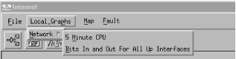

B.2. Adding a Menu to NNM
Once you have a toolbox of scripts,
adding them to an NNM menu makes them easier to access and execute.
This trick can be especially useful if you prefer to use NNM's
graphical interface.
The key to adding custom menus is the directory
$OV_REGISTRATION/C.
($OV_REGISTRATION contains directories for all
the languages available on your system; C is the
directory for the default language and is probably where you should
start.) The C directory contains all the files
that make up the menu system you see when you run NNM. For example,
the file ovw contains the familiar options from
the main window (New, Open, Refresh, etc.).
Let's look at the
$OV_REGISTRATION/C/ovsnmp/xnmloadmib file.
It's fairly easy to see how to hook an external command into a
menu. Let's jump right in and create a menu that is two levels
deep with two menu choices:
Application "Graph Menu"
{
Menubar <100> "Local_Graphs" _p
{
<100> "Network" _N f.menu "network_menu";
}
Menu "network_menu"
{
<90> "5 Minute CPU" _M f.action "5mincpu";
<90> "Bits In and Out For All Up Interfaces" \
_B f.action "bit_for_all_up";
}
Action "5mincpu" {
Command "/opt/OV/local/scripts/Cisco_5min_cpu \
\"${OVwSelections}\"";
MinSelected 1;
MaxSelected 7;
SelectionRule (isSNMPSupported || isSNMPProxied) ;
}
Action "bit_for_all_up" {
Command "/opt/OV/local/scripts/Cisco_Line_Up_Bits \
\"${OVwSelections}\"";
MinSelected 1;
MaxSelected 3;
SelectionRule (isSNMPSupported || isSNMPProxied) ;
}
}
Create a file within $OV_REGISTRATION/C and
insert the previous code listing. Once this is done, run
ovw with the -verify switch,
which checks for errors.[74] You may see errors or
warnings about your new menu item but, if you're successful,
you'll see an item that looks like the menu in Figure B-2.
WARNING:
NNM can be picky with registration files.
If you can't see your menu, try the ovw
-verify trick. If it reveals no errors, take some entries
out and restart ovw. Keep doing this until your
items appear. You should also break up your menu items into multiple
files. Do not put all your menus and actions into one file. The more
files you have, the easier it will be to diagnose and troubleshoot
your new menu items.

Figure B-2. A new menu
Let's talk about some commonalties within our registration file:
-
Each menu and menu item is
associated with a keyboard shortcut that allows the user to access
it. The trigger character is preceded by an underscore. For example,
from the "Local_Graphs
 Network" menu, you can hit
"M" to go to the "5 Minute CPU" item.
Network" menu, you can hit
"M" to go to the "5 Minute CPU" item.
-
Each menu item has a precedence number
within angle brackets. This allows you to control the order in which
items appear. Items with the highest precedence appear first in a
menu; items with the same precedence are listed in the order in which
they appear in the file. For example, if we reduce the precedence of
"5 Minute CPU" from <90> to <80> it will
appear after the "Bits In and Out" menu item, because the
higher-precedence item comes first.
The
Menubar entry contains the menus that will appear
in the top NNM menu bar. We used the function
f.menu to call a submenu. The following code shows
how we could have used f.action to call an action
directly:
Menubar <precedence> "menubar Label" _MnemonicChar
{
<precedence> "SubMenu Label" _MnemonicChar f.menu "menu-name"
<precedence> "Action Name" _MnemonicChar f.action "action-name"
}
A
Menu looks and behaves like the menu bar (or menu)
that contains it, with a few differences. Menus
don't declare mnemonic characters or precedence; these are
defined by the containing menu or menu bar. The
menu-name is the linking name that appears after
f.menu.
Menu "menu-name"
{
<precedence> "SubMenu Label" _MnemonicChar f.menu "menu-name"
<precedence> "Action Name" _MnemonicChar f.action "action-name"
}
Actions are called just like
Menus. The action-name is the
linking name of an action that gets called when selected from a
previous item (either a Menu or a
Menubar):
Action "action-name"
{
Command "/opt/OV/local/scripts/Cisco_5min_cpu \"${OVwSelections}\"";
MinSelected 1;
MaxSelected 7;
SelectionRule (isSNMPSupported || isSNMPProxied) ;
}
There are a few additional parameters in our
Action declaration:
-
Command specifies which program or script should
be executed. The \"${OVwSelections}\" at the end
of the command string passes all currently selected objects to the
program as arguments.
-
MinSelected declares how many nodes must be
selected before this item becomes available. If nothing is selected,
the corresponding menu choice will be grayed out and unclickable.
-
MaxSelected works the same way, but declares the
maximum number of objects that can be selected.
-
SelectionRule uses capability fields[75] within a logical statement. These rules
declare what is necessary for the selection to be deemed a
"good selection."
Action declarations can contain many additional
parameters, as can registration files. The examples we've given
should be enough to get you going in the right direction. The
OVwRegIntro (5) manpage defines the syntax of
the registration files in detail; read this page carefully if
you're serious about adding custom menu items.
 |  |  |
| B. More on OpenView's NNM |  | B.3. Profiles for Different Users |

Copyright © 2002 O'Reilly & Associates. All rights reserved.